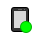

<div class="top" data-role="none">
    <span id='toolbar_ruler' style='visibility:hidden;font-size: 12px;'></span>
    <div class="sta">
        </img>
        <label id="deviceConnSta">
            <!-- 接続中 -->
        </label>
        <button id="btConnect" style="display: none" tabindex="-1">
        </button>
        <label id="deviceStorageUsage" style="color:#808080"> </label>
    </div>
    <div class="btn">
        <div id="syncBtnDiv" class="syncBtnDiv" tabindex="1">
            
            <label id="folderSync" data-i18n="toolbar.sync.exec" class="btn-lbl" for="toolbar-folderSync" style="margin-right:0px">
                <!-- 同期 -->
            </label>
        </div>
        <div id="toolbarSyncResultDiv" class="toolbarSyncResultDiv" >
            <label id="syncDatetime" ></label>
            
        </div>

        <div id="syncSettingDiv" class="syncSettingDiv" tabindex="3">
            <label id="syncSetting" data-i18n="state.dp.sync.guide" class="syncSetting"></label>
            <!-- 同期の設定方法 -->
        </div>
        
        <div id="fileimportBtnDiv" class="fileimportBtnDiv" tabindex="4">
            </img>
            <label id="fileimport" for="toolbar-export" class="btn-lbl" data-i18n="func.filePC.export">
                <!-- デジタルペーパーに入れる -->
            </label>
        </div>
        <div id="screenshotDiv" class="screenshotDiv" tabindex="5">
            </img>
            <label id="screenshot" for="toolbar-screenshot" class="btn-lbl" data-i18n="func.dp.screenshot">
                <!-- スクリーンショット -->
            </label>
        </div>
        <div id="settingDiv" class="settingDiv" tabindex="6">
            </img>
            <label for="toolbar-setting" class="btn-lbl" id="lbl-toolbar-setting" data-i18n="func.config.showConfig">
                <!-- 設定 -->
            </label>
        </div>
        <div id="helpDiv" class="helpDiv" tabindex="7">
            <div style="display:flex;">
                </img>
                <label id="lbl-toolbar-help" for="toolbar-help" class="btn-lbl" data-i18n="menu.category.help">
                    <!-- ヘルプ -->
                </label>
            </div>
            <div class="dropdown-content" data-role="none">
                <label data-i18n="func.app.onlineHelp" id="helpGuide" tabindex="7"></label>
                <hr/>
                <label data-i18n="func.app.launchSupportSite" id="helpSupport" tabindex="7"></label>
                <label data-i18n="desc.func.app.launchSupportSite" id="helpSuppl"></label>
            </div>
        </div>
    </div>
</div>
<div id="toolbarBottom" class="bottom">
    <div id="viewTypeDiv">
        <input type="radio" name="viewType" id="folderview" value="folder">
        <label id="folderLbl" for="folderview" class="folderLbl" data-i18n="func.view.folder" tabindex="101"> 
            <!-- フォルダー -->
        </label>
        <input type="radio" name="viewType" id="documentview" value="doc">
        <label id="docLbl" for="documentview" class="docLbl" data-i18n="func.view.document" tabindex="102">
            <!-- ドキュメント一覧 -->
        </label>
    </div>
    <div id="searchDiv" style="border-left:solid 0.5px;border-left-color:rgba(0, 0, 0, 0.1);">
        </img>
        <div id="searchTypeDiv">
            <input type="radio" name="searchType" id="searchText" value="text" checked>
            <label id="searchTextLbl" for="searchText" class="searchTextLbl" data-i18n="func.search.typeText" tabindex="103">
            </label>
            <input type="radio" name="searchType" id="searchMark" value="mark">
            <label id="searchMarkLbl" for="searchMark" class="searchMarkLbl" data-i18n="func.search.typeMark" tabindex="104">
            </label>
        </div>
        <div id="serachInputDiv">
            <input type="textbox" id="keyword" name="keyword" class="keyword" placeholder="" tabindex="105"/>
        </div>
        <div id="markSearchDiv" style="display:none">
            <input type="radio" name="searchTargetMark" id="typeMarkStar" value="3" checked tabindex="106">
            <label id="lbl-typeMarkStar" for="typeMarkStar" class="rest" style=" margin: 10px 0px 0px 50px;" tabindex="107"></label>
            <input type="radio" name="searchTargetMark" id="typeMarkAsterisk" value="4" tabindex="12">
            <label id="lbl-typeMarkAsterisk" for="typeMarkAsterisk" class="rest" style=" margin: 10px 0px 0px 50px; " tabindex="108"></label>
        </div>
        <button data-role="none" id="btnSearch" data-inline="true" class="btnSearch" data-i18n="func.search.execSearch" tabindex="109">
            <!--  検索 -->
        </button>
    </div>
</div>
